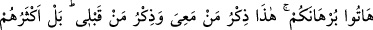

ALLAH’TAN BAŞKA
İLAHLAR BULUNSAYDI…
21. Yoksa (o müşrikler), yerden bir takım ilahlar edindiler de, (ölüleri) onlar mı
diriltecekler?
22. Eğer yerde ve gökte Allah’tan başka ilahlar bulunsaydı, yer ve gök, (bunların
nizamı) kesinlikle bozulup gitmişti. Demek ki Arş’ın Rabbi olan Allah, onların
yakıştırdıkları sıfatlardan münezzehtir.
23. Allah, yaptığından sorumlu tutulamaz; onlar ise sorguya çekileceklerdir.
24. Yoksa O’ndan başka birtakım ilahlar mı edindiler? De ki: Haydi delillerinizi
getirin! İşte benimle beraber olanların Kitab’ı ve benden öncekilerin Kitab’ı. Hayır,
onların çoğu hakkı bilmezler; bu yüzden de yüz çevirirler.
25. Senden önce hiçbir rasûl göndermedik ki ona: ”Benden başka ilâh yoktur; şu
halde bana kulluk edin” diye vahyetmiş olmayalım.
“Yoksa” o müşrikler, “yerden” yâni yerden bazı taşları oyarak, bakır ve tunç gibi
muhtelif cevherlerden yaptıkları “bir takım ilahlar” putlar “edindiler de,” ölüleri
“onlar mı diriltecekler?”
Bu cümlede vâki olan değil, böyle bir şeyin vâki olması reddedilmektedir.
Müşriklerin ilahlarını “yerden” edinmelerinden murad, onu tahsis değil edindikleri şeyi
tahkirdir. Âyette esas reddedilen, cehâlet sayılan ve kötü görülen “edinme”nin kendisi
değil, putların ölüleri dirilteceği iddiâsıdır. Çünkü onların putları ilahlar edindikleri
şüphesiz bir vakıadır. Bilakis müşrikler yeryüzünden bazı ilahlar edinmişlerdir.
Özellikle o putlar, hakir ve cansız birer varlık oldukları halde ölüleri diriltecekler, öyle
mi? Hayır, asla... Onların edindikleri ilahların böyle bir şeyle ilgisi yoktur. Müşrikler
açıkça söyleyemeseler de Allâh’ın ölüleri dirilteceğini kabul etmemeleri, kendi
ilahlarının dirilteceği zannında olduklarını gösterir. Nitekim onlar: “Şu çürümüş
kemikleri kim diriltecek?” (Yâsîn, 36/78) demişlerdir. Şu halde onlar, putların ölüleri
dirilteceğini nasıl iddiâ ederler?! Fakat onlar putların ilah olduğunu iddiâ edince, sanki